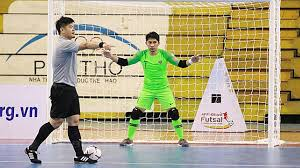

Hallo gan ! pada tau olah raga futsal kan ?
Futsal olah raga yang mirip ama sepak bola bedanya futsal maennya di lapangan lebih kecil (biasanya di dalam ruangan/indoor).
Futsal dimainkan 2 tim dengan masing masing tim beranggotakan 5 orang pemain, 7 pemain cadangan dan pergantian pemain tak terbatas (unlimited).
Nah para pemain futsal ada posisi posisi nya nih gan.
1. Kiper

Posisi dan Tugas Pemain Dalam Futsal
Semua udah tau dong posisi kiper. Tugas kiper sepak bola dan futsal itu sama, sama-sama menjaga gawang dari serangan lawan.
Jika agan pengen jadi kiper, agan kudu punya refleks dan insting membaca bola yg baik supaya gak gampang kebobolan.
2. Anchor
Posisi dan Tugas Pemain Dalam Futsal
Posisi selanjutnya adalah anchor. anchor ini posisinya di depan kiper, klo di sepak bola bisanya di posisi bek.
Tugas anchor gak cuma bertahan tapi juga mengatur permainan tim, anchor juga bisa di bilang pemain pertama yang memulai penyerangan.
Kalo agan pengen jadi anchor, agan kudu punya skill penguasaan bola yang top dan juga stamina yang kuat karena tugasnya ganda.
3. Flank
Posisi dan Tugas Pemain Dalam Futsal
Posisi berikutnya adalah flank. flank ini biasanya ada disamping.
Tugas flank adalah sebagai motor serangan dalam sebuah tim futsal, selain jadi motor serangan flank juga bertugas sebagai penghubung antara anchor dan pivot.
Kalo agan pengen jadi flank, agan kudu punya speed dan kontrol bola yang bagus, flank juga kudu jeli memanfaatkan peluang untuk menjadi gol.
4. Pivot
Posisi dan Tugas Pemain Dalam Futsal
Posisi terakhir adalah pivot. Pivot merupakan pemain yang menyelesaikan peluang menjadi gol. maka perang pivot ini lebih penting dari anchor dalam mencetak gol.
selain itu pivot juga bisa mnjadi pemutus serangan pertama dari lawan sebelum masuk ke daerah pertahanan sang pivot.
Kalo agan pengen jadi pivot, agan kudu punya body balance yang tinggi dan insting haus gol yang greget.